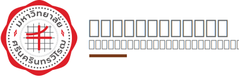

TH
EN
เข้าสู่ระบบ

หน้าแรก
ประวัติความเป็นมา
ภาพจำลองรูปแบบสามมิติ
คลังข้อมูล
พิพิธภัณฑ์เสมือนจริง
SWUMuseum.
ประวัติความเป็นมา
หอจดหมายเหตุฯ เป็นแหล่งอธิบายอดีต อธิบายแก่นสาระของการเป็นโรงเรียนฝึกหัดครูชั้นสูง การเป็นวิทยาลัยวิชาการศึกษา และการเป็นมหาวิทยาลัยศรีนครินทรวิโรฒ จดหมายเหตุ (Archives) เป็นเรื่องของหลักฐานและเอกสารที่บอกการเดินทางและแก่นสาระของมหาวิทยาลัยศรีนครินทรวิโรฒ
ภาพจำลองรูปแบบสามมิติ
ภาพสามมิติจำลองเค้าโครงของอาคารสถานที่ที่สำคัญของมหาวิทยาลัยศรีนครินทรวิโรฒ
คลังข้อมูล
ภาพในอดีตที่เป็นประวัติศาสตร์ และเกียรติภูมิของมหาวิทยาลัยศรีนครินทรวิโรฒ
พิพิธภัณฑ์เสมือนจริง
สถานที่ในการเก็บรวบรวมข้อมูล ความรู้ และแสดงสิ่งต่าง ๆ ของมหาวิทยาลัยศรีนครินทรวิโรฒที่มีความสำคัญในแต่ละด้าน โดยการสร้างขึ้นด้วยระบบดิจิทัล และแสดงผลผ่านระบบเครือข่ายอินเทอร์เน็ต โดยมีจุดมุ่งหมายเพื่อให้เป็นประโยชน์ต่อการศึกษา ค้นคว้าวิจัย เผยแพร่ความรู้ เสมือนการได้ไปยังพิพิธภัณฑ์จริง